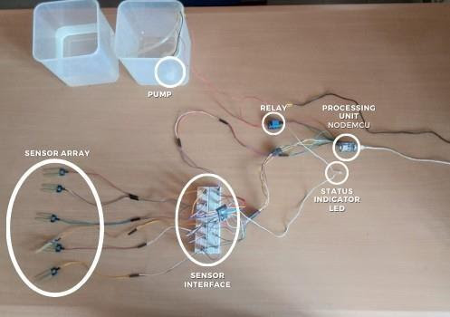

Embedded System Based Solution for Ailment of Irrigation in Agriculture



Smart agriculture using embedded system-based automated irrigation management is the most prominent approach and will be pivotal in revolutionizing the agricultural domain. The excess as well as inadequate irrigation damages the crops and inflicts great loss to the farmers. This paper proposes a small-scaled embedded system for the application of an irrigation system to provide a sustainable environment for the crops by implementing automation.
Specifications
- Arduino Uno and ESP-01
- Soil Moisture Sensor Array
- Relay driven motor
- MQTT Server (ThingSpeak)
Algorithm-Process Flow
Step 1: Input
- The sensor array unit senses the conductivity and sends the same in analog format to the sensor interface.
Step 2: Forwarding the input
- The interface uses a comparator to get the digital equivalent of the obtained analog data.
- The digital data is sent to the processing unit.
Step 3: Comparison and decision making
- The processing unit or control unit uses the received data and produces the average moisture level in the soil.
- The average value is compared with the threshold value, thus deciding if the available moisture is sufficient.
- If insufficient, then a signal is passed to the relay to drive the pump till the water content rises above the set threshold.
Step 4: Output
- The output panel, in this case, the Arduino IDE serial monitor, displays the status of each sensor in the array as well as the motor in real-time.
- This allows for overall supervision of the system when needed and also the overall performance of the system over a time period.
- From ThingSpeak, the IFTTT API send an email notification to the user in case the water level is below/above the set threshold.
Co-Authored with : Kaushik Lakshmiramanan, Ramya Vijay, Nithya Chidambaram.
Published in: 2021 Innovations in Power and Advanced Computing Technologies (i-PACT).